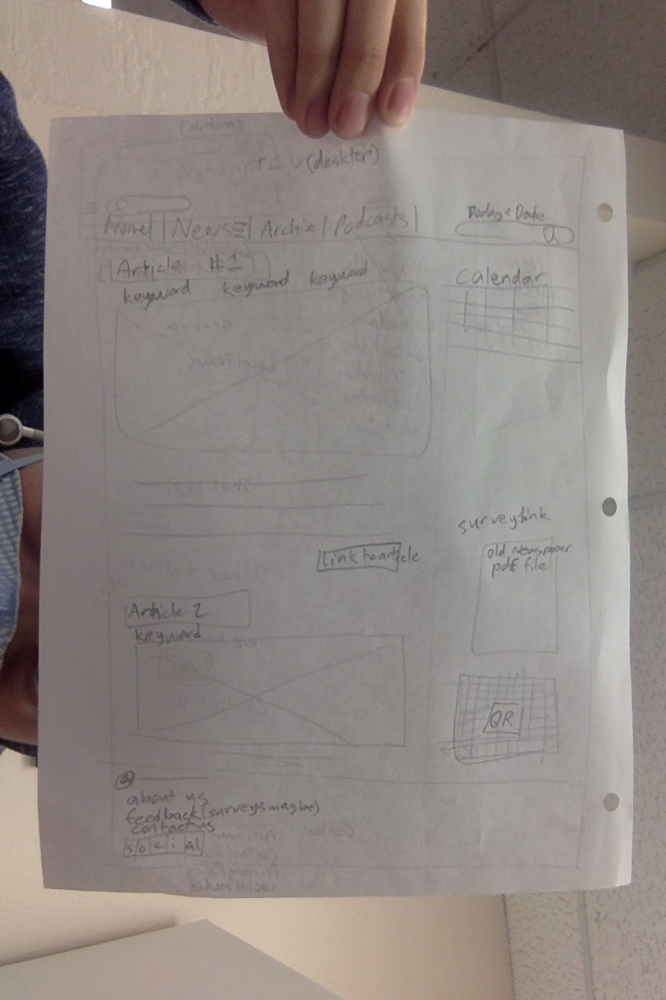

Local libraries' stand against global pandemic
By Marc Vicente, May 26, 2020

With shelter-in-place orders being extended, it remains uncertain when organizations will resume normal operations, and businesses and public facilities are finding ways to adapt.
Read more...Newspaper company starts using WordPress
By Marc Vicente, Jun 10, 2020
Even though the old Tri-City Voice website was in a similar format to this one, it got replaced when the new method of distributing news was created in 2019.
Read more...